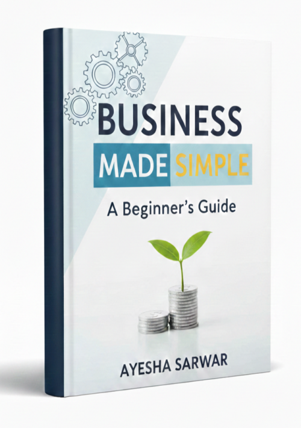

Business Made Simple
Product profile · Marketplace data 2026-10-09 · Sales-page research 2026-10-09 · Categories: Business & Investment, Personal Development, Profession & Job

Marketplace record
| Product type | E-books |
|---|---|
| Price | $20.12 (Single payment) |
| Affiliate commission | 80% |
| Refund window | Per the vendor's sales page — check the official page before buying |
| Vendor | GhulamBooks (listed since 2025-09-12) |
| Marketplace stats* | Cart conversion — · cancel rate — · affiliate earnings/sale $16.10 |
* Vendor-side marketplace statistics reported by Digistore24; they depend on traffic quality and are not a forecast.
Vendor's marketplace description
Affiliate Commission: 80% Product : Ebook Price: $17.99 Target Countries: USA, UK, Canada, Australia, New Zealand
From the vendor's sales page
Page title: Business Made Simple – A Beginner’s Guide - Digistore24
Section headlines
- "Why 80% of Complex Business Plans Never Make a Dime_And The 'Simple-Systems' Secret That Separates the Dreamers from the Doers."
- ---------> To Know "Read This Book"
- "Stop the Startup Stalling: The Jargon-Free Blueprint to Delete Business Confusion and Launch Your Idea This Weekend."
- ---------> To Know "Read This Book"
- If you buy " Business Made Simple" you will get another eBook For Free
- Rewire Your Professionalism: The 'Business-Ready' Framework to Getting Your First Customer in Record Time."
- ---------> To Know "Read This Book"
- Reviews
- About The Co-Author
- "Why 80% of Complex Business Plans Never Make a Dime_And The 'Simple-Systems' Secret That Separates the Dreamers from the Doers."
Opening copy
Starting a business can feel like stepping into a maze: endless advice, complicated jargon, and the constant fear of making the wrong move. You want to succeed,but every decision feels frustrating.Where do you start? How do you market your product? How do you manage finances, customers, and growth, all at once? The frustration can be paralyzing, and it’s easy to give up before you even begin.
I felt completely lost when I first tried to start a business. I didn’t understand the basics of marketing, finances, or even planning a simple business model. This book breaks everything down into simple, actionable steps that even a total beginner like me can follow.
Why This Ebook is Different: Unlike dense textbooks or overwhelming guides, Business Made Simple – A Beginner’s Guide focuses on real-world strategies that are easy to understand and implement. It’s designed to empower you to take action and move forward confidently.
Prices mentioned on the page: $49 · $17.99 · $47 · $10
Guarantee language found: “60” — always confirm the current terms on the official page before relying on it.
Research method: raw HTML fetch · 2750 words on page · quality: rich · researched 2026-10-09. Full research file (MD) ↗
Where to check it out
Read the vendor's full sales page (current price, guarantee terms and bonuses are listed there):
View official sales page
That link is an affiliate link — if you buy through it we earn a commission from the vendor at no extra cost to you.